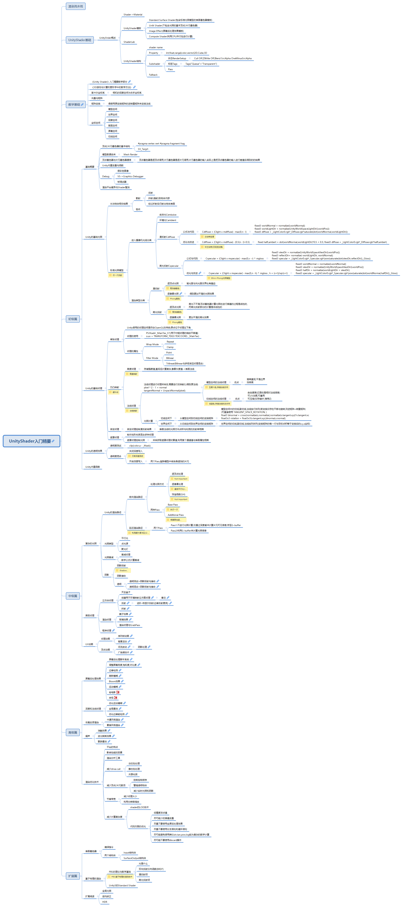

UnityShader入门精要

渲染流水线
UnityShader基础
UnityShder概述
Shader->Material
UnityShader模板
Standard Surface Shader(包含标准光照模型的表面着色器模板)
Unlit Shader(不包含光照的基本顶点/片元着色器)
Image Effect(屏幕后处理效果模板)
Compute Shader(利用CPU并行性进行计算)
ShaderLab
UnityShader结构
shader name
Property
int,float,range|color,vector|2D,Cube,3D
Subshader
状态RenderSetup
Cull Off,ZWrite Off,Blend SrcAlpha OneMinusSrcAlpha
标签Tags
Tags{"Queue"="Transparent"}
Pass
Fallback
数学基础
《Unity Shader》入门精要数学部分
《3D游戏与计算机图形学中的数学方法》
笛卡尔坐标系
相机的观察空间为右手坐标系
向量与矩阵
矩阵变换
得使用原变换矩阵的逆转置矩阵来变换法线
坐标空间
模型空间
世界空间
观察空间
裁剪空间
屏幕空间
切线空间
初级篇
基础概要
顶点/片元着色器的基本结构
#pragma vertex vert #pragma fragment frag
SV_Targrt
模型数据由来
Mesh Render
顶点着色器与片元着色器通信
顶点着色器是逐顶点调用,片元着色器是逐片元调用.片元着色器的输入实际上是把顶点着色器的输入进行差值后得到的的结果
Unity内置变量与函数
Debug
假彩色图像
VS->Graphics Debugger
帧调试器
渲染平台差异与Shader整洁
Unity的基础光照
光与物体相交结果
散射
反射
折射(透射)到物体内部
经过折射后仍射出物体表面
吸收
标准光照模型
进入摄像机光线分类
自发光Cemissive
环境光Cambient
漫反射Cdiffuse
公式与代码
Cdiffuse = (Clight x mdiffuse) · max(0,n · l)
fixed3 worldNormal = normalize(i.worldNormal); fixed3 worldLightDir = normalize(UnityWorldSpaceLightDir(i.worldPos)); fixed3 diffuse = _LightColor0.rgb*_Diffuse.rgb*saturate(dot(worldNormal,worldLightDir));
优化与改进
Cdiffuse = (Clight x mdiffuse) · (0.5(n · l)+0.5)
fixed halfLambert = dot(worldNormal,worldLightDir)*0.5 + 0.5; fixed3 diffuse = _LightColor0.rgb*_Diffuse.rgb*halfLambert;
高光反射Cspecular
公式与代码
Cspecular = (Clight x mspecular) · max(0,v · r) ^ mgloss
fixed3 viewDir = normalize(UnityWorldSpaceViewDir(i.worldPos)); fixed3 reflectDir= normalize(-worldLightDir, worldNormal); fixed3 specular = _LightColor0.rgb*_Specular.rgb*pow(saturate(dot(viewDir,reflectDir)),_Gloss);
优化与改进
Cspecular = (Clight x mspecular) · max(0,n · h) ^ mgloss , h = (v+l)/sqr(v+l)
fixed3 worldNormal = normalize(i.worldNormal); fixed3 viewDir = normalize(UnityWorldSpaceViewDir(i.worldPos)); fixed3 halfDir = normalize(worldLightDir + viewDir); fixed3 specular = _LightColor0.rgb*_Specular.rgb*pow(saturate(dot(worldNormal,halfDir)),_Gloss);
渲染类型分类
漫反射
逐顶点光照
背光面与向光面交界处有锯齿
逐像素光照
得到更加平滑的光照效果
高光反射
逐顶点光照
高光不平滑:顶点着色器计算光照在进行插值的过程是线性的, 而高光反射部分的计算是非线性的
逐像素光照
更加平滑的高光效果
Unity的基础纹理
单张纹理
Unity使用的纹理空间是符合OpenGL的传统:原点位于纹理左下角
纹理的使用
PS:float4 _MianTex_ST;(用于村粗纹理的缩放平移值) o.uv = TRANSFORM_TEX(V.TEXCOORD, _MainTex)
纹理的属性
Wrap Mode
Repeat
Clamp
Filter Mode
Point
Bilinear
Trilineat(Bilinear与多级渐远纹理混合)
凹凸映射
高度纹理
存储强度值,直观但计算复杂,像素灰度值->表面法线
法线纹理
法线纹理进行纹理采样后,需要进行反映射以得到原法线: pixel * 2 - 1 = normal tangentNormal = UnpackNormal(pixel);
模型空间的法线纹理
优点
简单直观,平滑边界 效率高
切线空间的法线纹理
优点
自由度高(记录的是相对法线信息) 可UV动画,可重用 可压缩(仅存储XY,推导Z)
光照计算
切线空间下
从模型空间到切线空间的变换矩阵
模型空间中的切线,副切线,法线按行排列(若变换仅存在平移与旋转,则逆矩阵=转置矩阵) (可直接使用 TANGENT_SPACE_ROTATION; ) float3 binormal = cross(normalize(v,normalize),normalize(v.tangent.xyz)*v.tangent.w; float3x3 rotation = float3x3(v.tangent.xyz,binormal,v.normal);
世界空间下
从切线空间到世界空间的变换矩阵
世界空间的切线,副切线,法线按列排列(变换矩阵的每一行与目标点积等于变换后的x,y,z坐标)
渐变纹理
渐变纹理控制漫反射结果
表面法线和光照方向点积与材质的反射率相乘
遮罩纹理
制作地形材质混合多种纹理
遮罩纹理控制光照
采样获取遮罩纹理纹素值,利用某个通道值与表面属性相乘
Unity的透明效果
透明度测试
clip(color.a - _Mask);
透明度混合
关闭深度写入
开启深度写入
两个Pass,剔除模型中被自身遮挡的片元
Unity内置函数
中级篇
复杂的光照
Unity的渲染路径
前向渲染路径
处理光照方式
逐顶点处理
逐像素处理
球谐函数(SH)
两种Pass
Base Pass
Additional Pass
延迟渲染路径
两个Pass
Pass1:不进行光照计算,仅通过深度缓冲计算片元可见信息,存至G-buffer
Pass2:利用G-buffer来计算光照信息
光照类型
平行光
点光源
聚光灯
光照衰减
衰减纹理
数学公式计算衰减
阴影
阴影投射
阴影接收
透明
透明测试+阴影投射与接收
透明混合+阴影投射与接收
高级纹理
立方体纹理
天空盒子
创建用于环境映射立方图纹理
备注
反射
进阶-菲涅尔反射(边缘反射更亮)
折射
渲染纹理
镜子效果
玻璃效果
渲染纹理与GrabPass
程序纹理
UV动画
纹理动画
序列帧动画
背景滚动
顶点动画
河流波动
阴影处理
广告牌技术
高级篇
屏幕后处理效果
屏幕后处理脚本系统
调整屏幕亮度,饱和度,对比度
边缘检测
高斯模糊
Bloom效果
运动模糊
老电影
夜视
深度和法线纹理
优化运动模糊
全局雾效
优化边缘能检测
非真实感渲染
卡通风格渲染
素描风格渲染
噪声
消融效果
波光粼粼效果
飘渺雾效
渲染优化技术
平台的特点
影响性能的因素
渲染分析工具
减少drwa call
动态批处理
静态批处理
共享材质
减少顶点/片元数目
控制绘制顺序
警惕透明物体
减少实时光照和阴影
节省带宽
减少纹理大小
利用分辨率缩放
减少计算复杂度
shader的LOD技术
代码方面的优化
低精度浮点值
尽可能少的插值变量
尽量不要使用全屏后处理效果
尽量不要使用分支语句和循环语句
尽可能避免使用类似sin,tan,pow,log较为复杂的数学计算
尽可能不要使用discard操作
扩展篇
表面着色器
编译指令
两个结构体
Input结构体
SurfaceOutput结构体
基于物理的渲染
PBS的理论与数学基础
光是什么
双向反射分布函数(BRDF)
漫反射项
高光反射项
Unity5的Standard Shader
扩展阅读
全局光照
伽马矫正
HDR